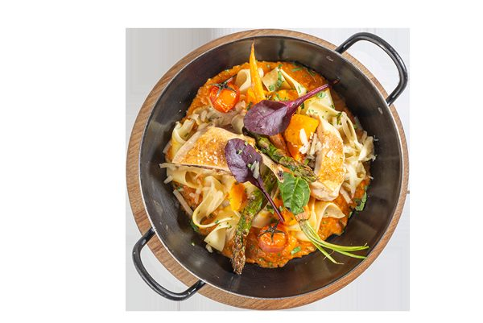
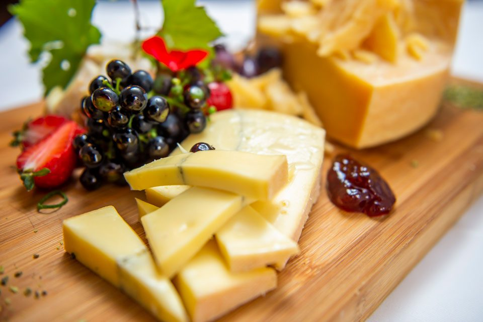

Hereinspaziert,
seit 1934
Das altsteirische Gasthaus im ältesten Viertel von Graz — steirische Küche, eine Weinstube in einem Haus aus dem 17. Jahrhundert und im Sommer die Altstadtterrasse über der Herrengasse.

Ein Haus mit ereignisreicher Vergangenheit
Im Herzen des ältesten Viertels von Graz, in einem Haus aus dem 17. Jahrhundert, hat die Herzl Weinstube seit ihrer Eröffnung 1934 durch Robert Herzl eine höchst ereignisreiche Vergangenheit erlebt, deren Geist bis in die Gegenwart spürbar ist.
Die traditionsreiche Gaststube wurde über die Jahre hinweg behutsam erneuert, ohne ihren urigen Charakter zu verlieren — und erfreut auch heute Einheimische und Reisende mit steirischer Gemütlichkeit.
Entdecken Sie im sommerlichen Graz die einzigartige Altstadtterrasse, die auch über die Herrengasse und die Altstadt-Passage erreichbar ist. Fern von Trubel und Betriebsamkeit spüren Sie hier bei kulinarischen Köstlichkeiten die Ruhe und Gelassenheit Jahrhunderte alter Architektur.
„Wir freuen uns auf Sie!“

Genießen Sie à la carte oder unsere Mittagsmenü-Variationen

Das beste steirische Backhendl
Reservieren Sie ein Plätzchen Ihrer Wahl und genießen Sie unter der Woche unsere geschmackvollen Mittagsmenüs, das beste Backhendl in Graz und regionale Spezialitäten aus der Speisekarte.
Die Räumlichkeiten aus dem 17. Jahrhundert bieten mit ihren charmanten unterschiedlichen Größen den idealen Rahmen für Zweisamkeit, Familienfeste und Firmenfeiern. Auf Wunsch gestaltet unser Küchenchef auch Buffet und Menü ganz nach Ihren Vorlieben.
Sie kommen nach einer Veranstaltung, die länger dauert? Bitte reservieren Sie rechtzeitig — bei Bedarf halten wir die Küche für Sie auch länger offen. Und fragen Sie nach der Abendempfehlung: jeden Abend gibt es etwas Besonderes.
Gutscheine mit Geschmack
Das kulinarische Geschenk für jeden Anlass: Kulinarik-Gutscheine ab € 10, das Backhenderlbuffet ab € 85,20 oder das 5-Gänge-Menü ab € 88,00 — dazu Grußkarten-Vorlagen zum Ausdrucken.
Platten, Buffets & Feiern
Platten für zwei oder mehr Personen, Buffets für die gemütliche Speisefolge und Festtagsmenüs nach Ihren Wünschen — dazu steirische Weine und das Schnapserl für „danach“.
Unser Küchengeheimnis
Für die frische Speisenzubereitung und den Einsatz regionaler Rohstoffe wurden wir mit dem AMA-Gastrosiegel ausgezeichnet. Woher Fleisch, Käse, Eier und Erdäpfel kommen, legen wir offen.
893 Bewertungen sprechen für sich
Auf Google kommt die Herzl Weinstube auf 4,4 von 5 Sternen bei 893 Bewertungen, auf Tripadvisor auf 4,0 von 5 bei 454 Bewertungen — Platz 35 von 594 Restaurants in Graz.